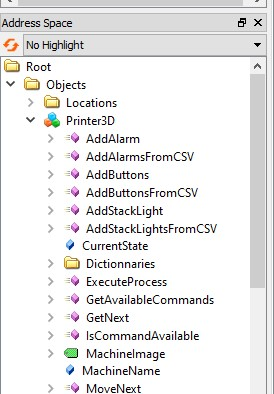

Go back
Building and starting the server
In Visual Studio, stop the server if it's launched.
Click on the arrow on the left of the machine that interests you (example below with the instance "Printer3D").
